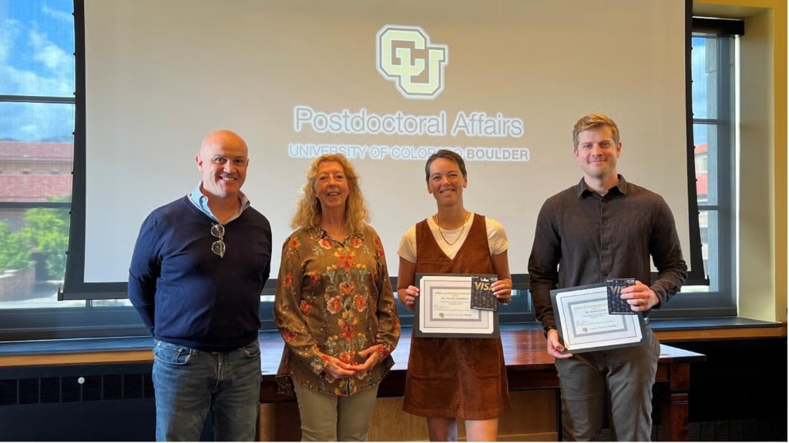
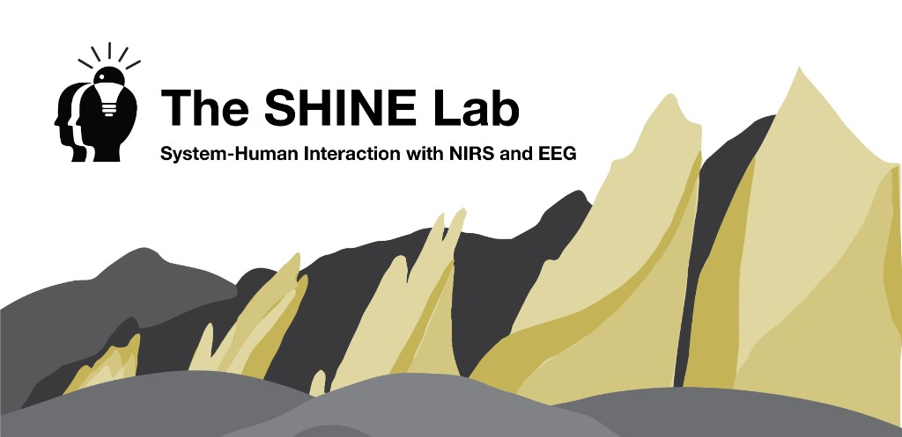
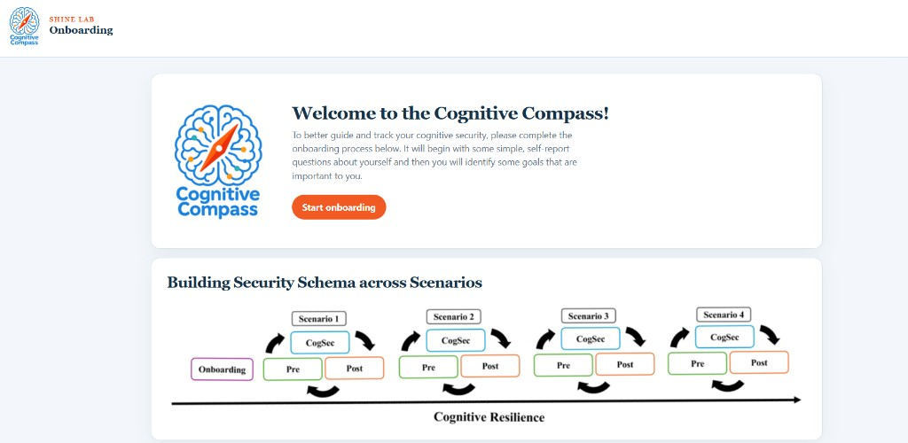
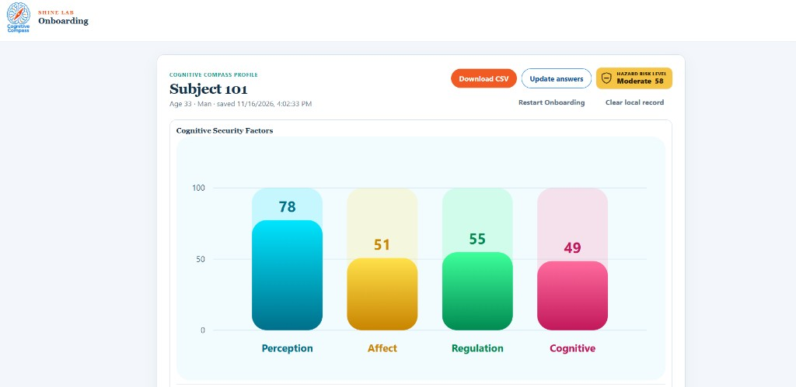
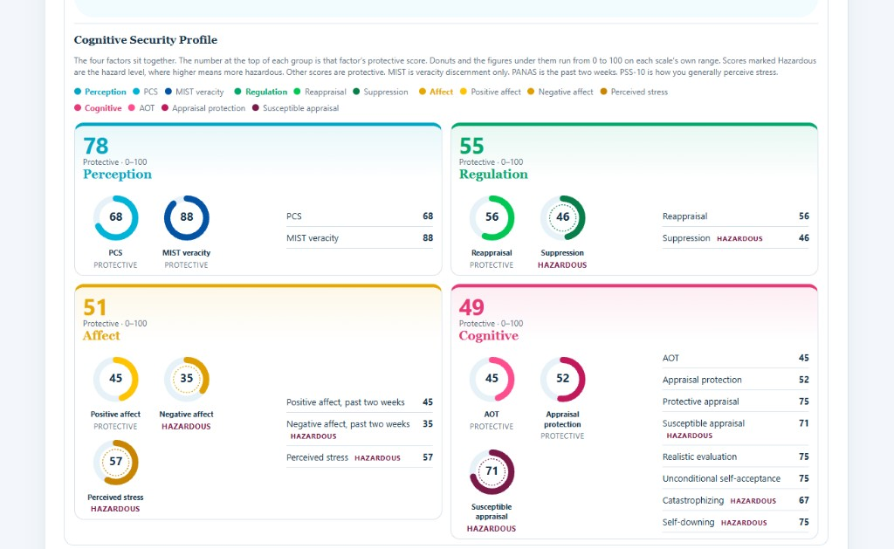
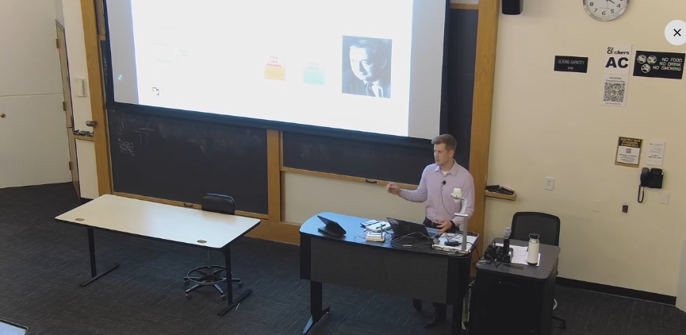
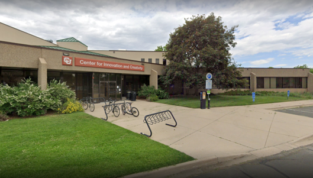
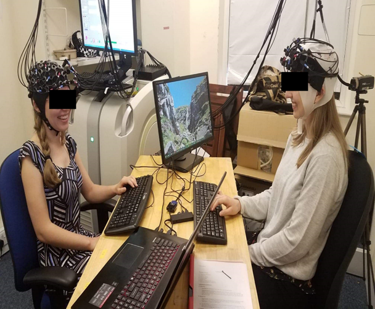
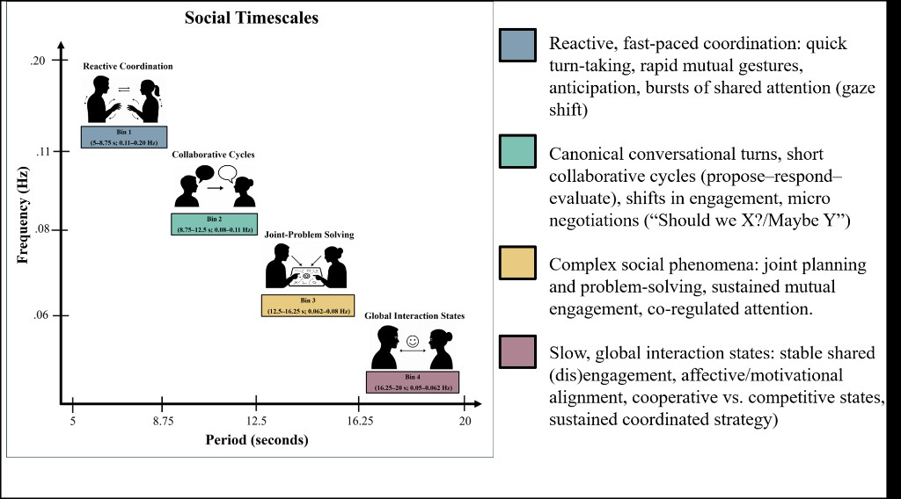
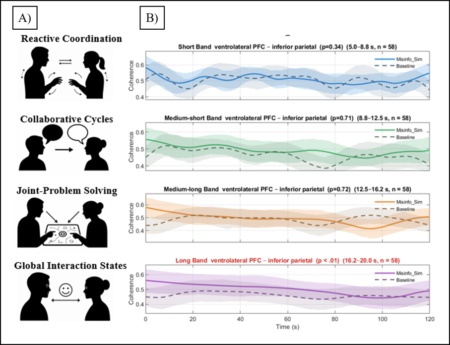

Outstanding Postdoc of the Year, 2026

Cognitive Neuroscientist | Experimental Psychologist | Research Scientist II | Lecturer | Director of the CRUM Lab | Founder of Elenca LLC
Research

I am a cognitive neuroscientist and lecturer at the Institute of Cognitive Science and Department of Psychology and Neuroscience at the University of Colorado, Boulder. I research the neurocognitive mechanisms of cognitive security, such as how the brain is exploited by and defends against information-based threats/cognitive attacks, and what makes people more susceptible and resilient to such things during human-computer interactions. More specifically, I am a lead member of the System-Human-Interaction-NIRS-EEG (SHINE) Lab at CU, where we use mixed methods (e.g., fMRI, fNIRS, eye-tracking, machine learning, behavioral data, psychometric data, etc.) to study cognition in real-world scenarios and environments, and we are currently developing an AI companion that uses these types of data to intervene and assist people in cognitive security situations.
The measurements now are in the SHINE Lab, System-Human Interaction with NIRS and EEG, directed by Leanne Hirshfield. I record with conventional fNIRS on an AFOSR MURI on cognitive security. Hirshfield is the principal investigator. The studies put judgment in high- and low-information settings, with another person and with an AI, from a controlled task toward a more ordinary one. The lab page has the preliminary synchrony plots and the equipment proposal that would make those recordings high-density.

Cognitive Compass is an AI-augmented tool for reasoning and metacognition. I lead that work. The three screens are one internal-testing profile: a welcome and scenario path, four summary scores, and the subscales. They are not a published norm.



Titles are the published titles. Manuscripts in preparation are not given publication status.
Lecturing

The research appointment is in the Institute of Cognitive Science. The teaching appointment is in Psychology and Neuroscience.
The lab
I direct the Cognitive Resilience Under Manipulation Lab at the Institute of Cognitive Science.

I wrote a DURIP proposal to the Air Force Office of Scientific Research: “The CRUM Lab: High-Density Optical Hyperscanning for Cognitive Resilience Under Manipulation.” It requests $180,445 for a tandem Cortivision SPECTRUM C23T system, so two adults can be recorded at once with high-density diffuse optical tomography while they speak, look, and decide. If it is funded, the imagers would be installed in SHINE. Hirshfield would provide the room. She is not a co-PI on the proposal. The CRUM Lab is the longer-term home of the instrument. The proposal is not an award.
The measure is inter-brain synchrony: wavelet coherence between hemodynamic signals, locked to speech and gaze, and compared with shuffled pairs. The MURI caps now are conventional fNIRS. They can show synchrony. They do not reconstruct it onto cortex the way high-density diffuse optical tomography would. The first recordings after installation would be dyads in cognitive-security tasks. Later recordings would code agreement, disagreement, and repair of a mental model, and would test whether a team-state summary can be computed while the interaction is still going. That last step is methods work. It is not a fielded tool.



I am the founder of Elenca LLC, a cognitive security company for consulting and education.
Contact: hello@elenca.io